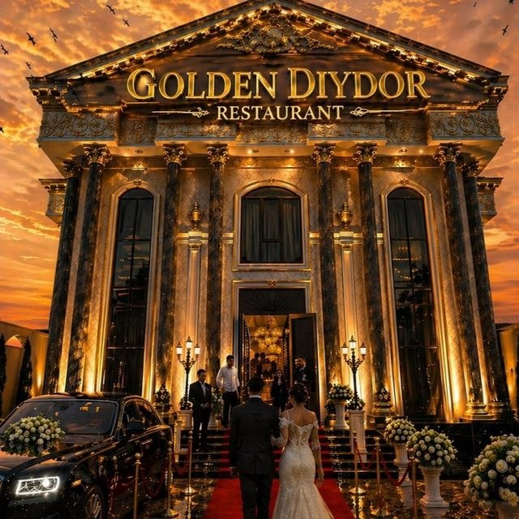

To'y taklifnomasiga xush kelibsiz!
Baxt oqshomiga taklif etamiz
09.06.2026
Hurmatli mehmonlar!
Sizlarni hayotimizdagi eng unutilmas va quvonchli kun —
Nikoh oqshomimizga lutfan taklif etamiz.
Siz azizlarni chin dildan qutlab, quvonchimizga sherik bo'lishingizni intizorlik bilan kutib qolamiz.
Kelinni olib ketish marosimi.
Go'zal va unutilmas xotiralar va rasmlar vaqti.
To'yxonada asosiy bazm dasturi boshlanishi.
Pastarg'om tumani, "Golden Diydor" to'yxonasi
